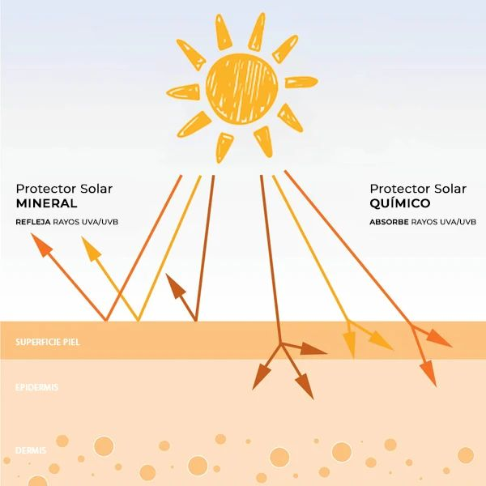
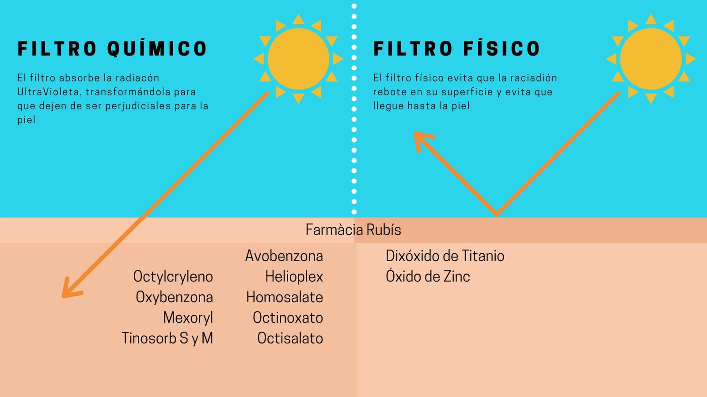

Protección
¿Cómo funcionan los rayos UV?
La luz solar corresponde al espectro completo de radiaciones electromagnéticas provenientes del sol, y se compone de tres espectros de luz: infrarrojo, visible y ultravioleta (UV)(Editorial Etecé, 2021). Siendo esta última la más importante a la hora de hablar de daño solar, puesto que es el componente que tiene el mayor efecto sobre la piel (Benedetti, 2023). La luz UV se clasifica en 3 tipos, dependiendo de su longitud de onda:
Ultravioleta A (UVA): Son los que presentan la menor energía, conformando el 95% de la radiación ultravioleta, en cuanto a la piel estos penetran hasta la dermis que es la capa más profunda de la piel, siendo los principales responsable del fotoenvejecimiento.
Ultravioleta B (UVB): Esta es la radiación que causa quemaduras solares, oscurecimiento de la piel, afectando a la capa más exterior, denominada epidermis, produciendo melanomas y otros tipos de cáncer de piel.
Ultravioleta C (UVC): Corresponde a la radiación con mayor frecuencia entre las tres, y por lo tanto, mayor energía, pero al tener una corta longitud de onda, es absorbida casi completamente por la atmósfera, por lo que no penetra en la piel (Eucerin, s.f.).

Protector Solar
Los protectores solares son productos que actúan como barrera para evitar que los rayos ultravioleta (UV) alcancen la piel. Hay protectores solares minerales (físicos) y químicos. Aunque, algunos protectores solares contienen una mezcla de ambos.
Los protectores solares minerales actúan creando una barrera sobre la piel que la protege de los rayos UV. Están compuestos de zinc o dióxido de titanio. Son una opción ideal para quienes tienen piel sensible. Aunque su textura es más espesa, lo que puede hacer que la piel los absorba con menos facilidad.
Mientras que los protectores solares químicos funcionan absorbiendo los rayos UV. Están compuestos de muchos ingredientes activos, entre los que se encuentran el octinoxato, la oxibenzona y la avobenzona. Estos protectores suelen ser más fáciles de aplicar e incluyen opciones resistentes al agua(Memorial Sloan Kettering Cancer Center, 2022).
